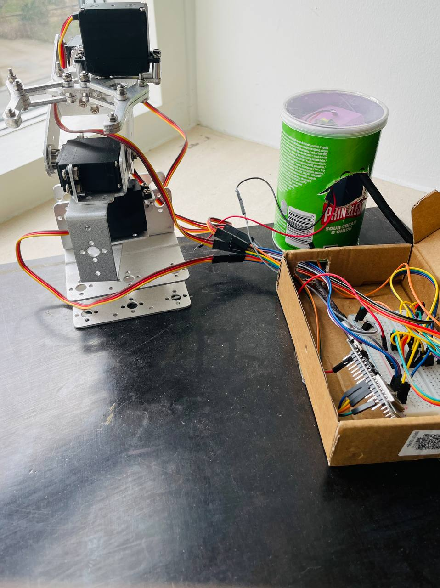

Controller
ESP32 Web Servo ControllerPotentiometer input was removed and replaced with a browser-based control interface for remote operation.
I built a robotic hand that can be controlled remotely through a browser interface. The project was migrated from Arduino Nano to ESP32, which made the whole control stack much more practical for web-based use.
Open GitHub repo Open control page
Controller
ESP32 Web Servo ControllerPotentiometer input was removed and replaced with a browser-based control interface for remote operation.
Remote access
robot.datanode.liveYou can control the hand through robot.datanode.live, but only when I turn the device on.
Firmware features
4 servos from a browserThe firmware controls four servos, limits the claw range to 20..150, and uses a 2-degree deadzone for more stable input handling.
Wi-Fi modes
STA and AP
Wi-Fi credentials are stored in flash. The controller can either connect to a router or
start its own ESP32-Claw-Control access point when needed.
